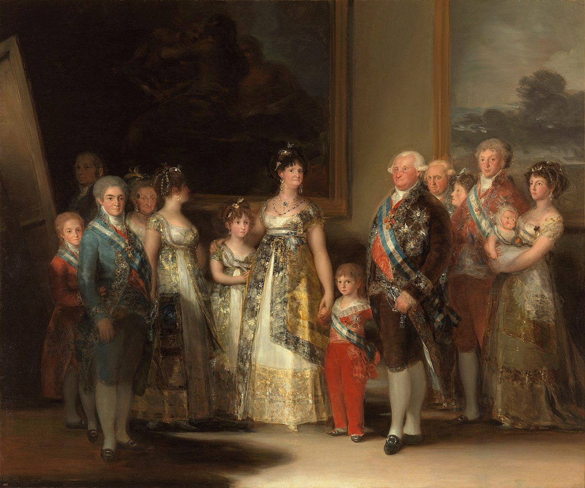
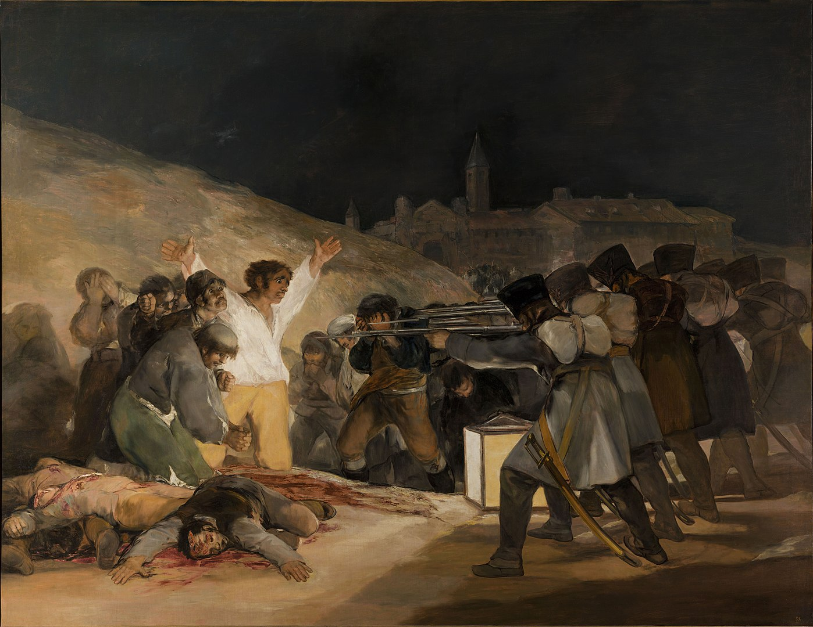

波乱の人生を駆け抜けた画家、ゴヤ。
美しい絵を生み出す画家であったが、時代や自身の病気とともに次第と絵のタッチが変わっていく。
大塚国際美術館には「黒い部屋」と題された、彼が書いた14枚の黒い絵がずらりと並んでいるのだが、
私がその部屋に入った時の第一印象は、「異空間」だった。
どれも決して美しく幸せな絵ではないが、ゴヤがその時代に見て感じてきたことを体感できる貴重な場所である。
興味がある方は、ぜひ一度、足を運んでいただきたい。
| 1746年 | スペインに生まれる。 |
|---|---|
| 元々芸術が好きな家庭で育ち、14歳から4年間、絵画の修行を始める。 | |
| 1760年 | 14歳から4年間、絵画の修行を始める。 |
| 印象派や新印象派の影響を受けた明るい色調の絵を描くようになった。 | |
| 1770年 | 24歳の時に大画家を目指しイタリアのローマへ。 |
| たくさんの刺激をうけ、翌年に帰国。 | |
| 1786年 | 国王カルロス3世付き画家になり、3年後に新王カルロス4世の宮廷画家となる。 |

“La familia de Carlos IV, por Francisco de Goya” by OSX Licensed under パブリック・ドメイン viaウィキメディア・コモンズ
『カルロス４世の貴族』
| 1792年 | ようやくスペイン最高の画家としての地位を得たゴヤだったが、不治の病にかかり聴力を失う。 |
|---|---|
| 1807年 | ナポレオン率いるフランス軍がスペインに侵攻。 |
| 翌年にはナポレオンの兄をスペイン王位につけ、事実上ナポレオン軍の支配下に。 | |
| 1808 | スペイン独立戦争 勃発。 |
| この動乱の時期に書かれたのが「マドリード1808年5月3日」である。 |

“El Tres de Mayo, by Francisco de Goya, from Prado in Google Earth” by OSX Licensed under パブリック・ドメイン viaウィキメディア・コモンズ
『マドリード 1808年5月3日』
| 1819年 | マドリード郊外に別荘を購入。「聾者の家」と称されている。 |
|---|---|
| 聾者の家のサロンや食堂を飾るために描かれた14枚の壁画群が「黒い絵」である。 |

{kind=link}
{kind=link}
{kind=link}
.jpg)
“SFrancisco de Goya, Saturno devorando a su hijo (1819-1823)” by OSX Licensed under パブリック・ドメイン viaウィキメディア・コモンズ
『我が子を食らうサトゥルヌス』
{kind=link}
| 1824年 | 当時のスペインの自由主義者弾圧を避けてフランスに亡命。 |
|---|---|
| 1826年 | 一時帰国し宮廷画家の辞職を認められる。 |
| 1828 | 亡命先のフランスにおいて、82年の波乱に満ちた生涯を閉じた。 |